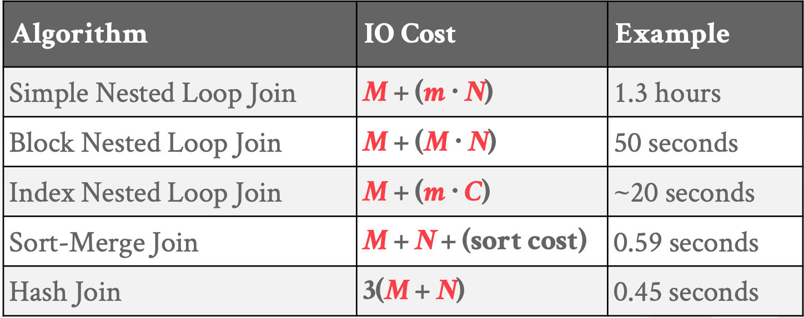

跳转至
Blog
JOIN 算法
键入以开始搜索
Blog
iswade's blog
5 年计划
Database Notes
分布式系统领域经典论文翻译集
About
高级markdown
Algorithms
Algorithms
Algorithms
Articles
Articles
BoltDB
ETCD
Go 并发编程
分布式系统之数据分区
Pebble
perf 工具使用
Raft 算法实现
2017 总结
2018 总结
Database
Database
读书笔记
分布式系统之故障检测
分布式系统之分布式事务
分布式系统之共识
分布式系统之复制
Distributed systems
Distributed systems
前言
第一章 概述
第二章 进程间通信：概述
第三章 通信模型
第四章 表示分布式算法 _语法和语义_
第六章 分布式系统中的时间
Go
Go
Exam04
Go exercises
Go exercises100
Go interview
Go标准库
Go
Go 语言工具
Notes
Notes
笔记本
Bash
Bash 简介
git 入门教程
程序员修炼之道读书笔记
python基础
Vmware
Adb nodes
Adb nodes
内存数据库
存储模型和数据布局
15 execution
并行 JOIN 算法（Hashing）
优化器实现 I
优化器实现 II
基于代价的优化
自动驾驶数据库
Db nodes
Db nodes
关系语言
关系模型
高级 SQL
数据库存储（I）
数据库存储（II）
缓存池
哈希表
树索引（I）
树索引（II）
索引并发控制
查询处理
排序和聚集
JOIN 算法
JOIN 算法
目录
嵌套循环 JOIN
排序-归并 JOIN
HASH JOIN
查询优化
并行执行
嵌入数据库逻辑
并发控制理论
时间顺序并发控制
多版本并发控制
日志
数据库恢复
分布式 OLTP 数据库
Translate
Translate
关系系统中的查询优化
Aurora：我们如何设计云原生关系数据库
Calvin: 分区数据库的快速分布式事务
F1 Query：大规模数据的声明式查询
分布式查询处理的最新进展
现代存储系统背后的算法
数据库隔离级别的比较
分布式系统大纲
无时钟的一致性：FaunaDB的分布式事务协议
广义分布式共识
如何使用 Go 接口？
Linux sysadmin
Paxos Made Live(译)
raft详解
Strong consistency models
Taurus Database: How to be Fast, Available, and Frugal in the Cloud
TaurusDB: 高性能高可用低成本云数据库
How to be a manager
ZooKeeper: 互联网系统无等待协调服务
Google practices
Google practices
Goolge 工程实践文档
Review
Review
Developer
代码检视开发者指导
Reviewer
Crdb
Crdb
分布层
分布式 SQL 查询
CockroachDB 中的 JOIN
CockroachDB: The Resilient Geo-Distributed SQL Database
CockroachDB：弹性地理分布SQL数据库
管道化共识写入加速分布式 SQL 事务
SQL 查询计划
复制层
SQL 层
[译] SQL的一生（CRDB）
Misc
Misc
持续集成系统
DBDB: Dog Bed Database
目录
嵌套循环 JOIN
排序-归并 JOIN
HASH JOIN
JOIN 算法
嵌套循环 JOIN
简单的
基于块的
基于索引的
排序-归并 JOIN
HASH JOIN
